几何无王者之道，
——古希腊数学家敬欧几里得
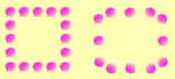
八戒不知从哪儿采来一大堆蜜桃，他对悟空说：“猴哥，替我看着点，我再去采一些回来。”八戒刚要离开，心里一琢磨，不行，猴头最爱吃桃，如果他趁我不在偷吃几个怎么办？他灵机一动，把采来的蜜桃摆成了一个正方形。
八戒说：“我摆的这个方阵，每边都有五个桃子，猴哥，你给我好好看着，少了可不成。”悟空笑着对八戒摆摆手：“放心吧！保证每边五个桃子，绝不会少。”没过一会儿，八戒又采来几串野葡萄，他刚要递给悟空，却瞧着蜜桃方阵愣住了。八戒问：“猴哥，这桃子好像少了许多？”
“没有的事！”悟空把眼睛一瞪，“你数一数，每边是不是五个！”八戒一数，果然每边仍是五个桃子。
悟空一本正经地说：“我闲来无事，把它们重新摆了摆，个数不少，你快去采果子吧！”说完从八戒手中接过野葡萄。八戒半信半疑，转身走了。
八戒走远了，悟空捂着嘴“哧哧”暗笑：“真是个呆子，原来的摆法有十六个桃子，我这么一变动就剩下十二个桃子了。”说着他从衣袋里掏出那四个桃子看了看，又从方阵中拿出两只桃子，一起藏了起来。
眨眼间，八戒又背回一口袋野山梨。他简直不敢相信自己的眼睛啦：“怎么，桃子就剩下这么几个啦？”
“不少，不少！”悟空指着桃子说：“每边五个，你自己数嘛！”八戒一数，每边确实是五个桃子。八戒拍着脑袋心想，这是怎么搞的？那么，悟空究竟是怎么做到的呢？
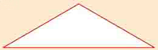
给定一个钝角三角形，能否通过添加若干条线把它分成若干个锐角三角形呢？请试一试！
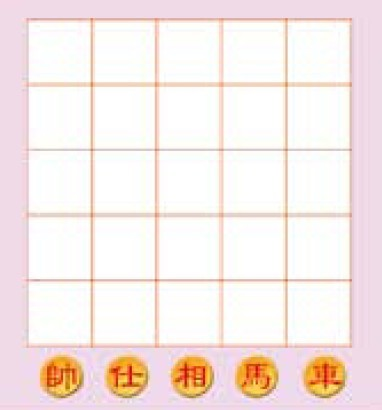
你能把下面五枚象棋子放在5×5方格图中，使五枚象棋子不同行、不同列且不在同一条对角线上吗？
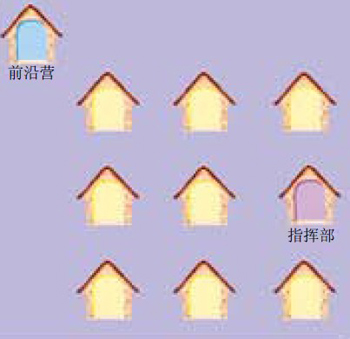
阵地上有如图所示十座兵营。现有一车军火拉到了指挥部，确定了分发份额后，军火车要从指挥部出发，分发其余九座兵营的弹药，最后由前沿营返回。该如何用最快的时间、最短的路线完成这一任务呢？
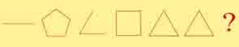
根据图形的排列规律，猜一猜问号处应该是一个什么图形？
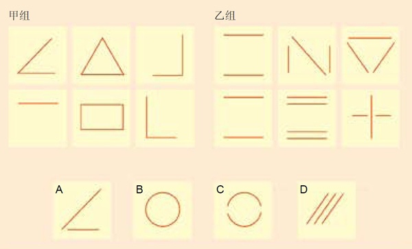
四个选择图案中，哪些属于甲组，哪些属于乙组？
十艘战舰排成了两列。当敌舰逼近时，有四艘战舰改变了位置，使舰队排出了五列，且每列各有四艘战舰。这是如何做到的？请在草稿纸上画一画。（提示：做这道题目时，可以用十枚硬币来做试验）
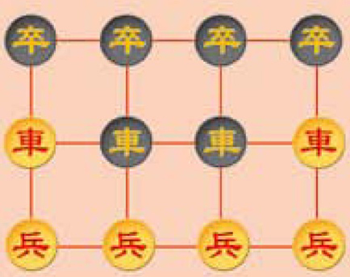
有十二枚象棋子排成下列图形。每相邻的四枚棋子都是一个正方形的一个端点，这样的正方形共有六个。如何只移走三枚棋子，使得只剩下三个正方形？
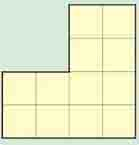
国王要把一块如图所示的不规则的土地分封给四位功臣，要求每位功臣分得的土地的面积、形状完全一致，该怎样分呢？
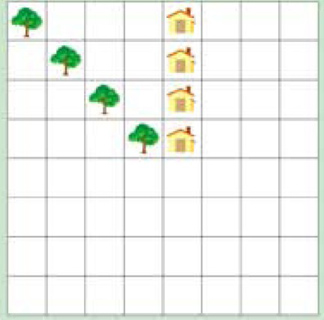
兄弟四人继承了父亲的遗产，遗产包括如图所示的土地、四棵果树和四间房子。遗嘱上注明要公平分配。请问：怎么分才能使四位兄弟每人都分到相同面积的土地，并且每块地上都有一间房子和一棵果树？（提示：可用涂色法解题）
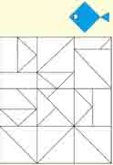
图中这条小鱼是由几个小图形组成的，你能在下图中将它找出来吗？（提示：可将小鱼儿涂上颜色，你只需涂上三个图形，就会发现它了）
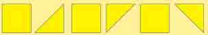
图中正方形的边长和等腰直角三角形的两腰长是相等的。如何利用这些图形，拼成一个大等腰直角三角形？（提示：可把这页复印后剪下来拼拼看）
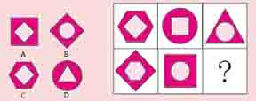
问号处应填哪个图形？
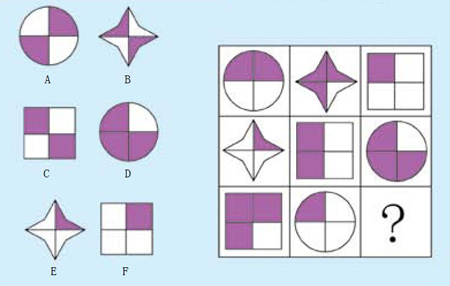
问号处应填哪个图形？
下图中有几个三角形？
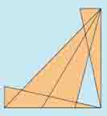
用七条直线最多可以画出几个不重叠的三角形？试试看。
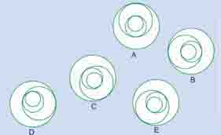
与众不同的图形是哪一个？
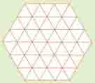
数数看，图中一共有多少个正六边形？
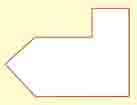
设法将此图形分割后，拼成一个正方形。（提示：可复印此图剪下来拼拼看）
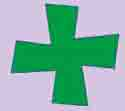
下图是一个奇形怪状的“十字形”。你能把它分为四部分，再拼成一个规则的正方形吗？
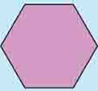
将下图的正六边形剪两刀，然后拼成一个正方形。该怎样剪，怎样拼呢？
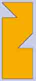
你能将右图分为大小和形状均相同的六等份吗？
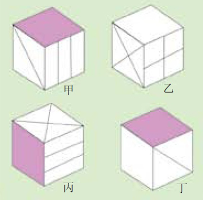
从不同的视角看到的同一个立方体如图所示。你能推算出与空白面相对的一面的图案吗？请直接在图上圈出来。
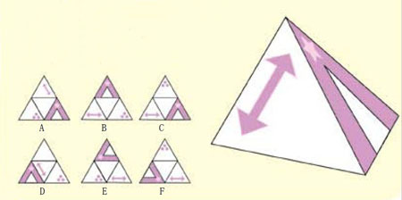
右图中的锥体展开成平面后对应的是下面中的哪一个？
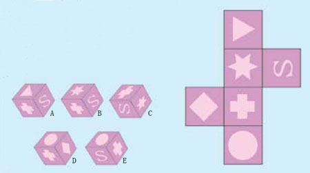
下面的立方体中，哪一个不可能是由右图折叠而成的？
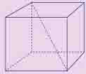
用一把米尺能量出正方体木块对角线的长度吗？已知相同大小的正方体木块足够多，且要保持正方体木块的完整。
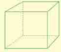
一个正方体如图所示，锯掉一个角后，还剩几个角？（提示：这里的“角”是立体的“角”，它不同于平面上的角哟）
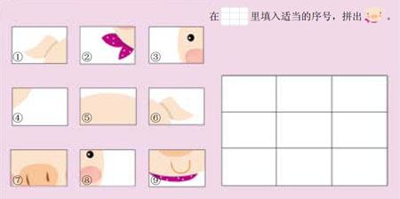
在□里填入适当的序号，拼出完整的小猪。
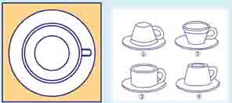
左图是从上面垂直往下看咖啡杯的样子。那么，请你仔细地观察并想象一下，与左图对应的咖啡杯是右图中的哪一个？
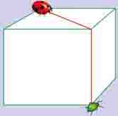
瓢虫想尽快抓住这只蚜虫。图中标出的红色路径是最短的吗？
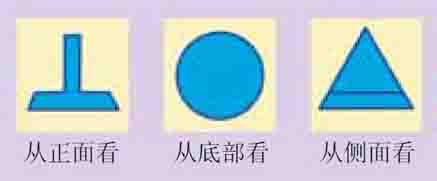
下图是从三个方向看到的某一个物体的投影。看完这些图形后，请想象并试着画出这个物体。
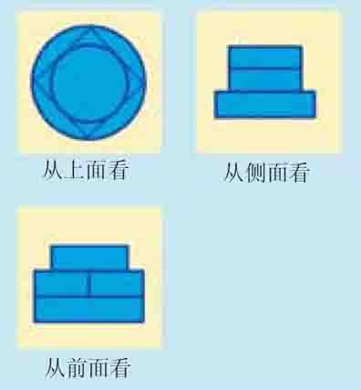
想象一下这个物体实际上的样子
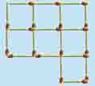
下图是由20根火柴杆排成的大小相同的9个正方形。试试看：移动3根火柴，放在适当的位置后，使图中只有5个闭合的正方形。
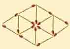
你能只拿去16根火柴里的四根，把下图变成四个大小相等的三角形吗？
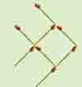
有一只用八根火柴摆成的小鱼，你能只移动三根火柴就让小鱼掉个头吗？
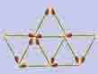
你能只移动四根火柴，把下面的小船变成三个梯形吗？
一位美丽的姑娘用八根木条给自己的两只玩具小羊羔做了两个正方形的木框。后来，有位爱慕者又送来了第三只小羊羔，因此小姑娘想改造一下，用这些木条做成三个一样大小的正方形木框。请用硬纸板剪出八根狭长的条子，其中四根条子的长度是另外四根长度的两倍。要求把这八根条子放在同一平面上，使它们组成三个同样大小的正方形。
丈夫在和妻子商量，怎样把缝好的正方形被子裁剪成两条较小的正方形被子。由于被子是按照网格的模式做成的，所以裁剪时只能沿着网格线来进行。
要求把被子裁剪成块数为最少的几块，然后用它们缝制两条较小的正方形被子。
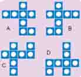
图中的深色方块代表杯垫，杯垫的上面都放上了一颗白色围棋子。其中有一组的摆放方式是和其他三组不一样的，请你找出来。
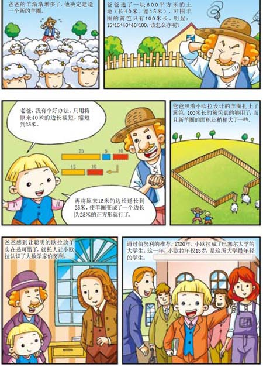
“几何”的由来
“几何”一词最早出现于希腊，本意是“测地术”。公元前300年左右，古希腊大数学家欧几里得写成了旷世巨著《几何原本》，该书第一次将数学理论系统化，被认为是现代数学的基础。汉语中“几何”一词是由明末数学家徐光启在翻译《几何原本》时首次提出的。
数学大师陈省身
陈省身（1911年10月28日～2004年12月3日），汉族，美籍华人，国际数学大师，是20世纪世界级的几何学家。他少年时代即显露数学才华，在其数学生涯中，几经抉择，努力攀登，终成辉煌。他在整体微分几何上的卓越贡献，影响了整个当代数学的发展，被誉为继欧几里得、高斯、黎曼之后又一里程碑式的人物。他曾先后主持、创办了三大数学研究所，培养了一批世界知名的数学家。
π与相冲之
人们为何要设计出π这样一个特殊的常数呢？要回答这个问题，我们首先要了解π的意义。
π又称圆周率，是圆的周长与直径的比值。我们知道，方形、多边形等图形的周长都是比较容易测量的，因为它们都是由线段组成，圆是由弧线组成的，而弧线的长度是很难测量的，所以圆的周长并不容易测量。虽然如此，但人们很快发现圆的周长与其直径之间存在着一定的比例关系，只要量出直径，就可以通过这一比例关系求出周长，这个比例关系就是圆周率π。遗憾的是，π是一个无限不循环的小数，其准确数值很难测量。
历史上最早的π值是由古埃及人发现的，当时取π=3.16。在对π的测量中，中国古人曾长期走在世界前列。公元263年，数学家刘徽首创割圆术，测量出π约等于3.14。公元460年，南朝的数学家祖冲之在前人工作的基础上，经过刻苦钻研，反复演算，将圆周率推算至小数点后第7位，即3.1415926与3.1415927之间，并得出了圆周率分数形式的近似值。祖冲之的这个π值保持了一千多年的世界纪录，直到1000多年后，西方人才获得了同样的结果。为了纪念这位伟大的古代数学家，人们将月球背面的一座环形山命名为“祖冲之环形山”，把小行星1888号命名为“祖冲之星”。